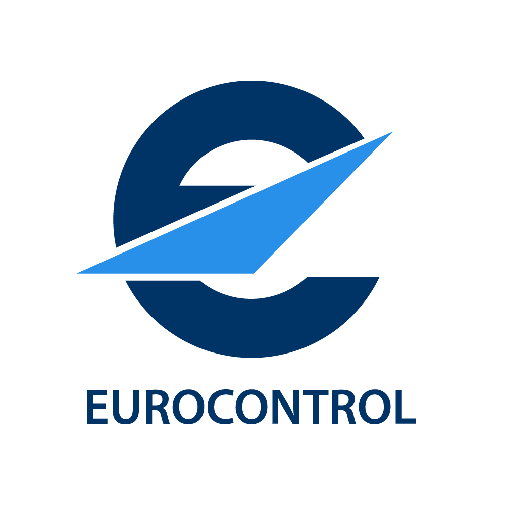

Advanced Emission Model (AEM)
Suite for calculating aircraft engine emissions across 4D trajectories (LTO + CCD), supporting ~24 pollutants (CO₂, NOx, SOx, PM, HC, …). BADA and CAEP methodologies, CLI/GUI/API variants.
Details
This page presents analytical tools that can be used to assess aviation environmental performance, perform calculations, or analyse scenarios.
In this catalogue, a “tool” typically allows the user to perform calculations, simulations, or scenario analyses based on specific inputs and assumptions.
Tools are typically used for:
• Scenario analysis and what-if assessments
• Environmental impact calculations
• Research and analytical studies
If you are looking for platforms that monitor and visualise environmental performance indicators, please refer to the Dashboards section.
Suite for calculating aircraft engine emissions across 4D trajectories (LTO + CCD), supporting ~24 pollutants (CO₂, NOx, SOx, PM, HC, …). BADA and CAEP methodologies, CLI/GUI/API variants.
DetailsAI‑based fuel flow & burn from radar/ADS‑B (QAR‑trained proxies; ICAO EDB/BFFM2 for emissions). Supports indicators (CDO/CCO) and ops inefficiency analysis.
DetailsWeb platform for Noise, gaseous and particulate assessments (BADA4 TEM). ICAO/ECAC‑aligned. INTACT enables automated, near‑real‑time local impact maps and graphics.
DetailsNetwork Strategic Tool for scenario‑based planning and airspace design via DDR datasets. Simulates trajectories, CAPA/ENV/Cost‑EFF impacts; AIRAC‑aligned updates.
DetailsAirport Local Air Quality Studies: QGIS plugin for inventory & dispersion (AUSTAL), covering aircraft and non‑aircraft sources (roads, GSE). Public code, flexible source selection.
DetailsResearch‑grade network simulation tool (CASA delay model, 3D HMI) for concept validation, scenario comparison and SESAR projects; very high performance.
DetailsA simplified emissions estimation tool developed and maintained by EUROCONTROL to support compliance with the EU Emissions Trading System (EU ETS)
Details